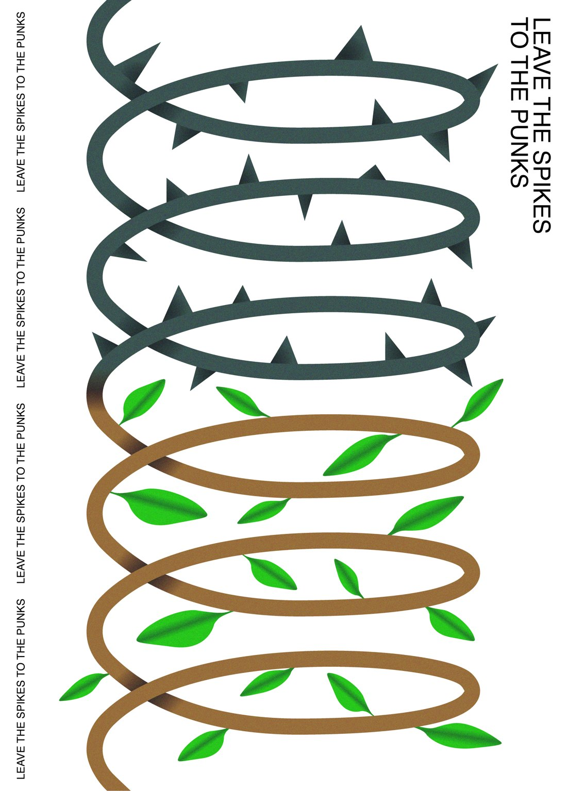

Leave the Spikes to the Punks
Un manifesto illustrato nato durante il workshop con Antonio Colomboni: dalla divisione alla condivisione.
Workshop con Antonio Colomboni · Illustrazione · Manifesto

L'illustrazione
Nella stessa spirale il filo spinato diventa un ramo d'ulivo: dalla guerra alla pace.
Il claim
Le spine lasciamole ai punk, che ne fanno solo estetica, e non usiamole più come confine. Un invito alla libertà e alla condivisione di spazi e culture.